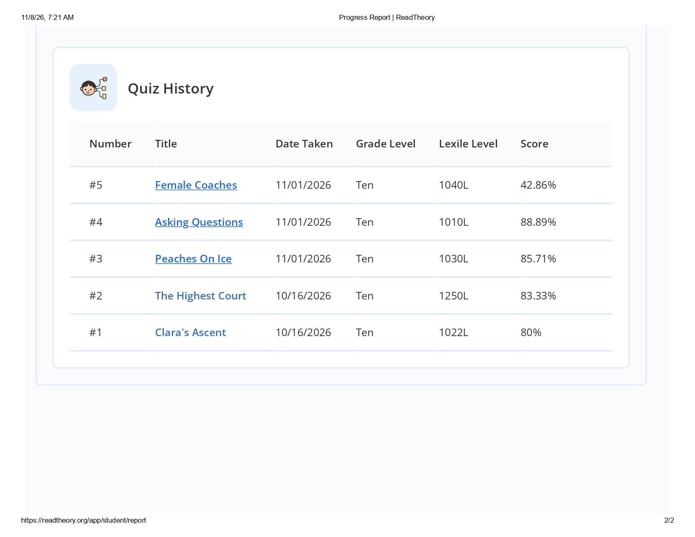

Curated by Aldison
The room light flickers and cast shadows on the ancient texts. The air grows thick as it changed a horrifying blue truth.
An index of the forbidden knowledge preserved beneath the endless tides.
The first descent into the unknown, where forgotten knowledge lies buried beneath the ocean floor.
Further discoveries from the depths, revealing secrets concealed by the ancient tides.
The final collection of knowledge, drawn from the deepest reaches of the abyss.
Welcome, wanderer, to the depths of my archive. Beyond the reach of sunlight, beneath the crushing weight of the endless ocean, lie fragments of knowledge long forgotten by the surface world. These manuscripts have endured the passage of countless tides, preserving what time itself sought to erase. Proceed with caution, for not every secret buried in the deep was meant to be uncovered.
"The greatest enemy of knowledge is not ignorance, but the illusion of knowledge." — Stephen Hawking
The first manuscript recovered from the depths. Like a vessel embarking upon an uncharted sea, it marks the beginning of my descent into the unknown. Within its pages lie the earliest fragments of understanding, the foundations upon which further discoveries would eventually rest. Even the mightiest Leviathan was once concealed within the darkness of the ocean.
Remember, traveler: the abyss does not reveal its treasures to the impatient. Every great discovery begins with a single descent into the unknown.
"It is not in the stars to hold our destiny but in ourselves." — William Shakespeare
The second scroll ventures further into the abyss. What once appeared familiar now reveals unfamiliar depths, as earlier discoveries give rise to greater questions. Like the shifting currents of an ancient sea, knowledge is never truly still; it changes, evolves, and carries those who pursue it ever deeper.
Yet the ocean remains vast, and its mysteries countless. There are whispers beneath the waves that have yet to reach the ears of the surface dwellers. My expedition is far from over.
"The only true wisdom is in knowing you know nothing." — Socrates
At last, we reach the deepest chamber of this archive. These pages represent the culmination of my journey through the depths, a collection of discoveries gathered from countless hours of exploration and study. Like the great Leviathan resting beneath the ocean floor, knowledge possesses a magnitude that few can truly comprehend.

A fragment of knowledge preserved beneath the depths.
The ocean has no end, and neither does the pursuit of knowledge. What lies within these archives is but a drop in an immeasurable sea, a handful of truths recovered from an abyss of unanswered questions. Perhaps one day, these records will reach those willing to venture further than I ever could.
Until then, let these scrolls remain beneath the tides, preserved against the passage of time.
— Sorc. Aldison, Keeper of the Abyss